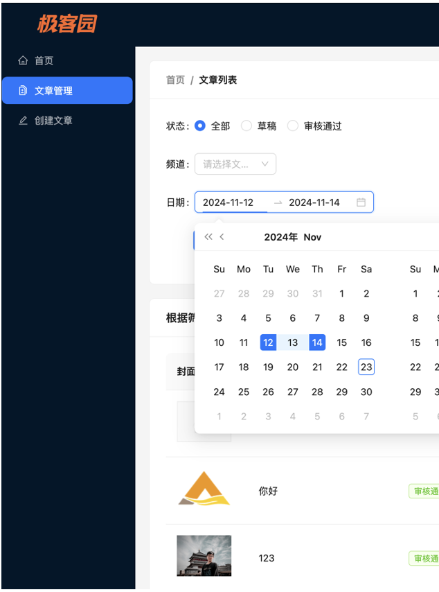
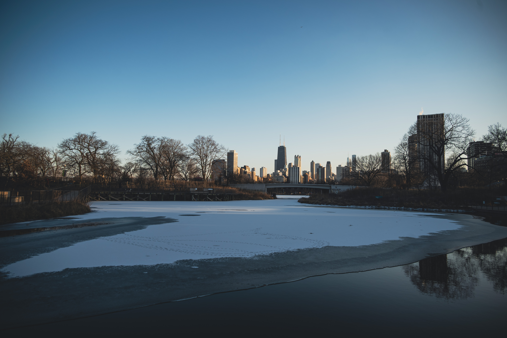

Projects
Production Quality Control and Profit Maximization Decisions
Role: Core Member, Advisor: Prof. Daohong Xiang- Developed and implemented optimization models using Python for multi-stage 0-1 integer linear programming to maximize production efficiency and reduce costs.
- Coded sequential sampling inspection models integrating Bayesian inference, significantly improving quality control and reducing inspection time.
- Conducted sensitivity analysis using simulation techniques to identify optimal production parameters and en- hance decision-making reliability.
- Built and automated decision models for multi-step assembly processes, resulting in the identification of 54 optimal production strategies and using data visualization to present key insights.
"Jike Garden" Blog Management System
Role: Individual DeveloperGitHub Link: Here
This project is a web-based blog management system built with React and Ant Design, aimed at improving the efficiency of blog article creation, management, and filtering. Through modularization and component-based design, the project achieves effective article management and a user-friendly operation experience.
- Utilized React and Ant Design component libraries to implement article listing, filtering functionality, and dynamic updates of status tags.
- Integrated the ReactQuill rich-text editor, supporting content formatting and auto-saving to enhance content editing efficiency.
- Encapsulated API requests and implemented response throttling to optimize front-end interactions and reduce the frequency of redundant requests.
- Achieved code reusability through componentization and modular development, providing support for future feature expansions.

Technologies Used
| Project | Technology |
|---|---|
| Production Quality Control and Profit Maximization Decisions | Python, Scikit-Learn, Pandas, Numpy, MatPlotLib |
| Personal Portfolio Website | HTML, CSS, JavaScript, React, Ant Design |
Photography
Madison,WI


Chicago, IL


